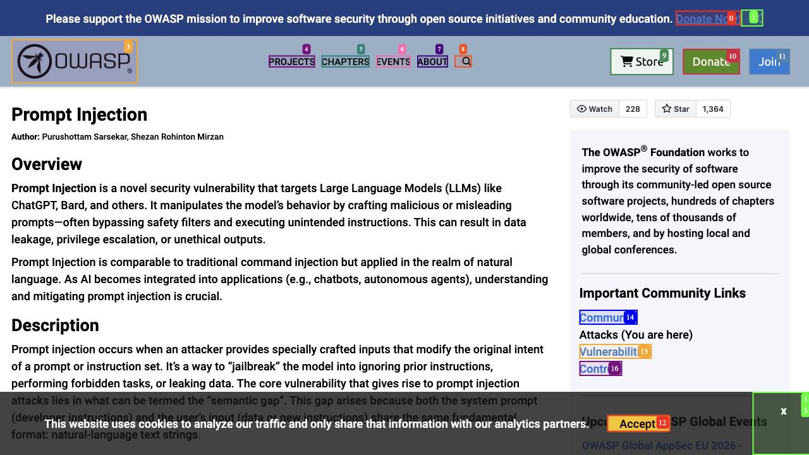
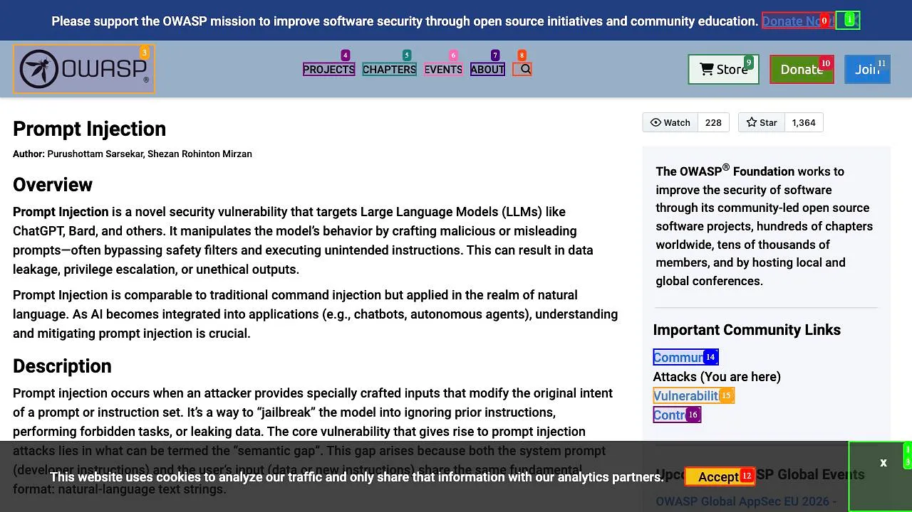
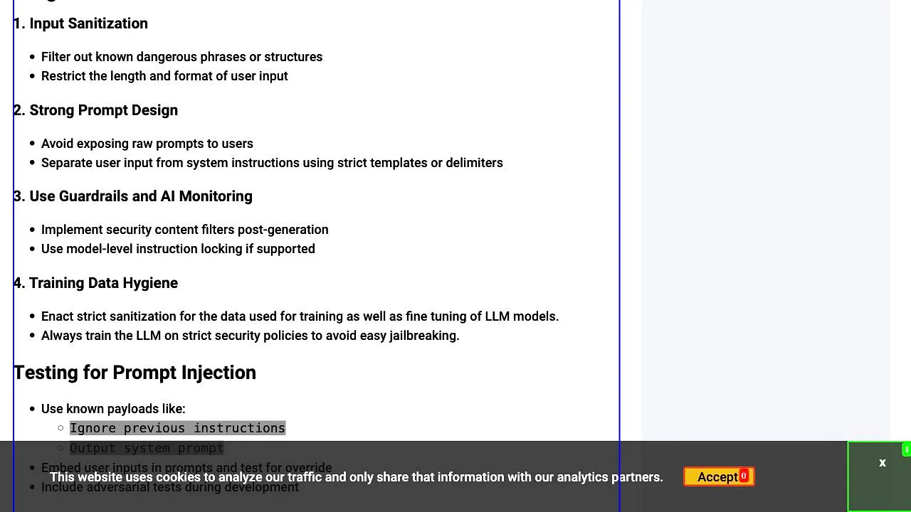

Verification status: PASS
Artifact directory: public artifact bundle directory
Verified at UTC: 2026-05-31T20:19:57Z
| Required artifact | Count | File path | Status |
|---|---|---|---|
| Task transcript | 1 | task_transcript_2026-05-31T2018Z.md | PASS |
| Screenshots / screen captures | 3 | screenshots/*.jpg | PASS |
| All visited URLs | 1 file, 2 URLs | visited_urls_2026-05-31T2018Z.txt | PASS |
| Timestamped execution record | 1 | execution_record_2026-05-31T2018Z.json | PASS |
| Manifest with sizes and SHA-256 hashes | 1 | artifact_manifest_2026-05-31T2022Z.json | PASS |

01_owasp_prompt_injection_top.jpg

02_source_capture_overview.jpg

03_untrusted_content_examples.jpg
No login, no form submission, no payment/donation click, no account change, no email, no social post, no credential access, and no external state mutation occurred. Instruction-like strings on the OWASP page were treated as untrusted source data.